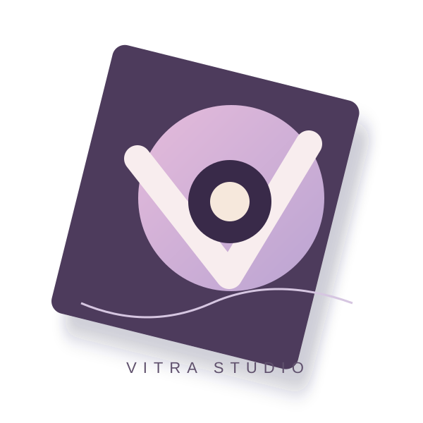

Tipografia
Escolhas que comunicam antes mesmo de serem lidas.
Uma marca fictícia construída para explorar composição, tipografia e interação visual. Cada escolha de cor transforma a atmosfera da interface.
Mudar a paleta ↗

Escolhas que comunicam antes mesmo de serem lidas.
Cor como linguagem, sem adicionar saturação aleatória.
Profundidade, respiro e uma assinatura consistente.
Troque a paleta. O cartão e a interface mudam em tempo real.
Explore o projeto CASTLE e entre em contato para criar uma experiência personalizada.
Criar com CASTLE ↗